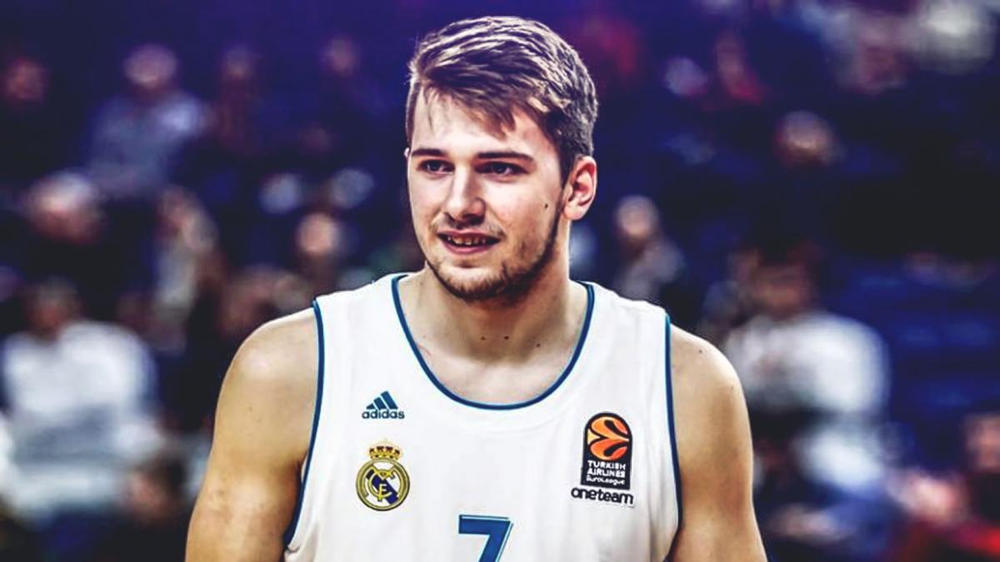
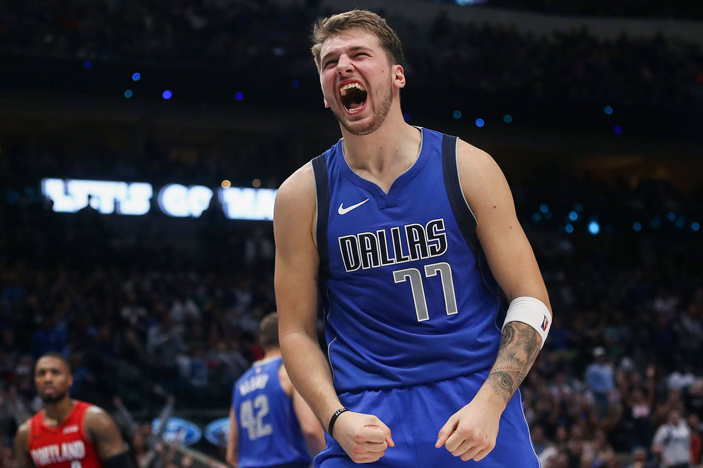
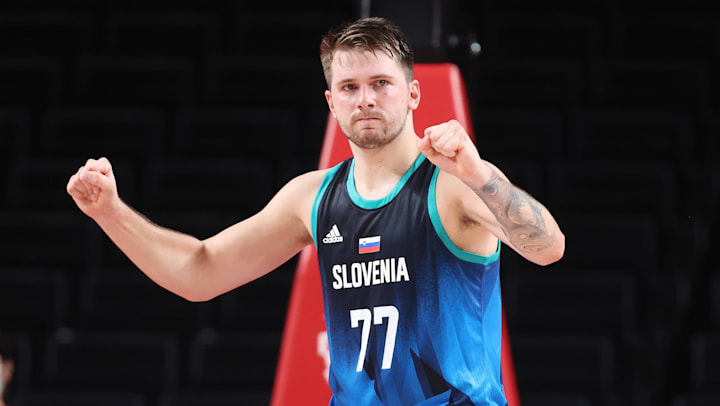

Ранні роки
Дончич народився у Любляні, Словенія, у родині власниці салонів краси Міріам Потербін та баскетбольного тренера та колишнього гравця Саші Дончича. Мати Дончича народилася у Словенії, а батько – у Сербії, спочатку родина жила у місті Клина, Республіка Сербія, а потім переїхала до Республіки Словенія. 2008 року батьки розлучилися, а Лука залишився з матір'ю.
Професійна кар'єра
Кар'єра в Європі
Свій перший професійний контракт Лука підписав у 13 років, вже у 16 потрапив у ростер основної команди і став третім наймолодшим гравцем за всю історію ліги ACB. Дебютував 30 квітня 2015 року, став наймолодшим гравцем у складі клубу «Реал». Мадрид» у чемпіонаті Іспанії у віці 16 років, 2 місяці та 2 дні.Свій перший професійний контракт Лука підписав у 13 років, вже у 16 потрапив у ростер основної команди і став третім наймолодшим гравцем за всю історію ліги ACB. Дебютував 30 квітня 2015 року, став наймолодшим гравцем у складі клубу «Реал». Мадрид» у чемпіонаті Іспанії у віці 16 років, 2 місяці та 2 дні. У молодшому віці у чемпіонаті Іспанії дебютували лише Рікі Рубіо (14 років і 11 місяців) та Анхель Реболо (15 років і 3 місяці)[8]. Дончич брав участь у плей-офф чемпіонату Іспанії у 2015 та у Міжконтинентальному кубку 2015 року.
Кар'єра в НБА
На драфті НБА 2018 Дончич був обраний «Атланта Хокс» під 3-м номером[9]. Права на гравця були обміняні в Даллас Маверікс на 5-й пік драфта (Трей Янг) і захищений пік драфта-2019 [10]. Так як його улюблений 7-й номер був зайнятий, слов'янець узяв собі ігровий номер 77 [11]. 9 липня 2018 року Лука підписав контракт із «Далласом»[12]. Дончич не грав у літній лізі НБА, оскільки займався викупом договору клубу «Реал Мадрид»[13]. ESPN перед початком сезону 2018/2019 назвала гравця фаворитом на приз найкращому новачкові.
Даллас Маверікс (з 2018)
Сезон 2018/19
Дебютував у НБА 17 жовтня 2018 року в матчі проти «Фінікс Санз» (100-121), у якому набрав 10 очок, зробив 8 підбирань та 4 передачі. 29 жовтня вперше подолав 30-очковий рубіж у матчі НБА: 31 очко та 8 підбирань у грі проти «Сан-Антоніо Сперс »(108-113). 20 листопада 2018 року Дончич зробив свій перший дабл-дабл у НБА — у матчі з «Мемфісом» (88:98) словенець набрав 15 очок (6 із 20 з гри) та 10 підбирань за 37 хвилин на майданчику. У листопаді та грудні 2018 року був визнаний найкращим новачком Західної конференції. 21 січня 2019 року у віці 19 років та 327 днів зробив свій перший трипл-дабл у НБА: 18 очок, 11 підбирань та 10 передач у матчі проти «Мілуокі Бакс» (106-116). За всю історію НБА лише Маркелл Фульц та Ламело Болл робили трипл-дабл у ранньому віці.
27 січня вперше набрав 35 очок і зробив свій другий трипл-дабл (12 підбирань та 10 передач) у матчі проти «Торонто Репторс». Через два дні було підтверджено участь Дончича в Матчі зірок НБА. У виборі на Матч усіх зірок НБА Дончич посів друге місце у голосуванні вболівальників, поступившись лише Леброну Джеймсу, і загальне восьме місце за голосами, проте не був включений як запасний до складу збірної Західної конференції. У січні втретє поспіль було визнано найкращим новачком Західної конференції. 7 лютого зробив свій третій трипл-дабл: 19 очок, 10 підбирань та 11 передач у переможному матчі проти «Хорнетс» (99-93). Дончич став наймолодшим гравцем в історії НБА, який зробив три трипл-дабла, перевершивши досягнення Меджік Джонсон на 117 днів. 23 березня у матчі проти «Голден Стейт» зробив шостий свій трипл-дабл: 23 очки, 11 підбирань і 10 передач, ставши 4 в історії ліги, серед гравців, які зробили таку кількість трипл-даблів у першому регулярному чемпіонаті [15]. У травні Дончич був одноголосно обраний до першої збірної новачків сезону, а червні він отримав премію «Новичок року НБА»[16][17]. Дончич став другим європейським гравцем після Пау Газоля, який виграв цю нагороду, і шостим переможцем, який не народився. у Сполучених Штатах.
Сезон 2019/20
Дончич зробив свій перший трипл-дабл у сезоні 25 жовтня 2019 року, набравши 25 очок, 10 підбирань та 10 передач, і допоміг «Маверікс» перемогти «Нью-Орлеан Пеліканс» (123:116)[18]. У двох матчах поспіль, 1-3 листопада, він не лише записав на свій рахунок два трипл-дабла, але й зробив рекордні за кар'єру 15 передач в обох іграх [19] [20]. 8 листопада Дончич набрав рекордні в кар'єрі 38 очок і зробив свій дванадцятий трипл-дабл у НБА, зробивши 14 підбирань та 10 передач у програному матчі проти "Нью-Йорк Нікс" (102-106) [21]. Через десять днів у переможному матчі проти «Сан-Антоніо Сперс» (117-110) Дончич записав на свій рахунок рекордні в кар'єрі 42 очки і свій шостий трипл-дабл у сезоні, зробивши 11 підбирань і 12 передач [22]. Він увійшов в історію НБА після перемоги над «Голден Стейт Уорріорз» 20 листопада (142:94), набравши 35 очок, зробивши 10 підбирань та 11 передач; таким чином, ставши наймолодшим гравцем, який зробив кілька трипл-даблів поспіль, набираючи при цьому щонайменше 35 очок, побивши рекорд Оскара Робертсона[23][24]. У листопаді Дончича було названо найкращим гравцем тижня Західної конференції НБА (18-24 листопада); це була його перша нагорода гравця тижня НБА[25][26]. 3 грудня він отримав свою першу нагороду гравця місяця НБА у Західній конференції за гру у жовтні та листопаді. Дончич став наймолодшим гравцем місяця Західної конференції з того часу, як Ліга почала видавати нагороду по конференціям у сезоні 2001/02[27]. У грудні він також був названий відкриттям року 2019 року виданням Sports Illustrated[28]. 8 грудня 2019 року Дончич перевершив рекорд за кількістю ігор поспіль, у яких було набрано не менше 20 очок, 5 підбирань та 5 передач з моменту злиття ABA та НБА у 1976 році. року. Цей рекорд раніше належав Майклу Джордану (18 матчів поспіль 1989 року)[29]. Дончич зробив свій десятий трипл-дабл у сезоні 4 січня 2020 року, набравши 39 очок, 12 підбирань та 10 передач у програному матчі проти «Шарлотт Хорнетс».
У сезоні 2019/20 Дончич був обраний на свій перший Матч усіх зірок НБА як гравець стартового складу Західної конференції[31]. Він став наймолодшим європейським гравцем, що вийшли з перших хвилин у Матчі всіх зірок[32]. 4 березня Дончич зробив 22-й трипл-дабл у своїй кар'єрі і обійшов Джейсона Кідда за їхньою кількістю в історії франшизи, набравши 30 очок, 17 підбирань та 10 передач, чим допоміг своїй команді обіграти «Нью-Орлеан Пеліканс» в овертаймі (123:123) ]. Дончич зробив свій 15-й трипл-дабл у сезоні 31 липня, набравши 28 очок, 13 підбирань та 10 передач, проте цей матч був програний команді «Х'юстон Рокетс» в овертаймі (149:153)[34]. 4 серпня Дончич записав на свій рахунок ще один трипл-дабл із 34 очками, 12 передачами та рекордними у кар'єрі 20 підбираннями у переможному матчі проти «Сакраменто Кінгз» (114:110 ОТ). Завдяки цьому він став наймолодшим гравцем, який набрав 30+ очок, 20+ підбирань та 10 або більше передач[35]. 8 серпня Дончич здійснив 19 передач, третій результат у його кар'єрі і перший у сезоні НБА 2019/20 нарівні з Леброн Джеймсом, [36] 36 очок, 14 підбирань і 2 втрати в переможному матчі проти «Мілуокі Бакс» (136:132). У цьому матчі він зробив 17-й трипл-дабл у сезоні і став наймолодшим гравцем, лідируючим з цього показателю.[37] 15 серпня він був включений до першої збірної за підсумками матчів після поновлення сезону, в яких він набирав у середньому 30 очок, 10.1 підбирання та 9.7 передач за гру.Дончич став одним із трьох фіналістів у номінації Найпрогресуючий гравець НБА.[39] Він фінішував третім, поступившись Брендону Інгрэму (1-е місце) та Бему Адебайо (2-е місце).[40] 17 серпня Дончич дебютував у плей-офф НБА та у першому матчі набрав 42 очки (найвищий показник у дебютному матчі плей-офф НБА в історії) у програному матчі проти «Лос-Анджелес Кліпперс» (110:118). 23 серпня він став наймолодшим гравцем в історії плей-офф НБА, який зробив трипл-дабл з 40+ очками, набравши 43 очки у переможному матчі проти «Кліпперс» (135:133 ВІД) і закинувши переможний триочковий.[42] Завдяки цьому виступу він став другим гравцем в історії НБА після Вілта Чемберлена, який набрав 43 очки, 17 підбирань і 13 передач у одному матче.[42] 16 вересня його було включено до першої збірної всіх зірок сезону НБА. Він став першим гравцем після Тіма Данкана в сезоні 1998/99, включеним до першої збірної всіх зірок свого першого чи другого сезону.[43] Він посів четверте місце серед кандидатів на звання MVP і став другим серед наймолодших гравців, які фінішували у першій п'ятірці голосування за цю нагороду.
Сезон 2020/21
6 лютого 2021 року Дончич набрав 42 очки, 11 передач і 7 підбирань у переможному матчі проти «Голден Стейт Уорріорз» (134:132).[46] 12 лютого Дончич набрав 46 очок (найвищий результат у кар'єрі), 12 передач, 8 підбирань, один блок-шот та один відбір у переможному матчі проти «Нью-Орлеан Пелікан» (143:130).[47][48] 1 травня Дончич набрав 31 очко, 12 підбирань та рекордні у кар'єрі 20 передач у переможному матчі проти «Вашингтон Візардс» (125:124). Завдяки цьому виступу він став четвертим гравцем історія НБА після Оскара Робертсона, Меджика Джонсона і Рассела Вестбрука, які зробили трипл-дабл з 30+ очками і 20+ передачами.[50] 7 травня він набрав 5000 очок у своїй кар'єрі. У віці 22 років і 68 днів Дончич став четвертим серед наймолодших гравців, які досягли цієї позначки, після Леброна Джеймса, Кевіна Дюранта та Кармело Ентоні.[51] 22 травня він набрав 31 очко, 10 підбирань та 11 передач у переможному матчі проти «Лос-Анджелес Кліпперс» (113:103) у першому матчі плей-офф НБА 2021[52] і став першим гравцем в історії НБА, який зробив три трипл-дабла в перших семи матчах плей-офф НБА у своїй кар'єрі.[53] Він також обійшов Каріма Абдул Джаббара, ставши наймолодшим гравцем в історії турніру, який зробив трипл-дабл у виїзному матчі плей-офф.[54] 28 травня він набрав 44 очки (другий результат у кар'єрі на той момент) у третьому матчі серії проти «Лос-Анджелес Кліпперс» (108:118).[55] 6 червня у своєму першому сьомому матчі серії плей-офф він набрав 46 очок, повторивши свій найкращий результат, і 14 передач, проте «Маверікс» поступилися з рахунком 111:126 і програли в першому раунді «Кліпперс» другий сезон поспіль, незважаючи на перемоги у перших двох матчах серії.[56][57] 15 червня Дончича було включено до першої збірної всіх зірок сезону НБА вдруге поспіль.[58]
4 липня 2021 року було оголошено, що Дончич з'явиться на обкладинці гри NBA 2K22, 23-ї гри серії NBA 2K.[59] 10 серпня 2021 року Дончич підписав із «Маверікс» п'ятирічний контракт на 207 мільйонів доларів, що стало найбільшою гарантованою сумою в історії для продовження договору новачка.[60]
Кар'єра у збірній
Юніорська збірна
Дончич мав зіграти на турнірі Дивізіону У чемпіонаті Європи з баскетболу серед юнаків до 16 років 2014 року, але був змушений знятися з турніру через травму коліна. У грудні 2014 року він взяв участь у товариському турнірі в Секешфехерварі, Угорщина, набираючи в середньому 35,3 очка та 7,6 підбору за гру при точності кидків 81% двоочкових та 57% триочкових.
Доросла збірна
Чемпіонат Європи 2017
22 вересня 2016 року Дончич оголосив, що представлятиме збірну Словенії до кінця своєї кар'єри[61]. Раніше його пов'язували з низкою інших національних збірних, включаючи Сербію та Іспанію[62]. Його сусідом по кімнаті у національній команді став Горан Драгич, з яким він познайомився у віці 7 років і якого називає своїм наставником та другом
Дончич був у складі збірної Словенії на чемпіонаті Європи 2017, де його країна здобула свою першу золоту медаль, здобувши перемогу у всіх дев'яти матчах на турнірі[64]. У переможному матчі проти Латвії (103-97) у чвертьфіналі Дончич набрав 27 очок і зробив 9 підбирань [65]. Він записав на свій рахунок 11 очок, 12 підбирань і 8 передач у півфіналі проти Іспанії (92-72) [66]. У фіналі, який збірна Словенії виграла з рахунком 93-85 у Сербії, Дончич набрав 8 очок і 7 підбирань, раніше чим вибув із гри через травму, отриману у третій чверті матчу[67]. Дончич також був включений до складу символічної збірної турніру, приєднавшись до товариша по команді Горана Драгіча, який також був визнаний MVP чемпіонату Європи[68].
Олімпійські ігри 2020
Під час Олімпійського кваліфікаційного турніру 2020 року ФІБА в Литві Дончич допоміг своїй збірній вперше кваліфікуватися на Олімпійські ігри. Дончич був визнаний MVP турніру, набравши 31 очко, 11 підбирань та 13 передач у фінальному раунді проти збірної Литви (96:85).[69]
26 липня 2021 року у своєму першому матчі на Олімпійських іграх Дончич набрав 48 очок у переможному матчі проти збірної Аргентини (118:100). Це стало повторенням другого серед найкращих результатів в одному матчі літніх Олімпійських ігор та найвищим показником у дебютному матчі на баскетбольному турнірі Олімпійських ігор. У півфінальному матчі проти збірної Франції (89:90) Дончич став третім гравцем в історії, який зробив трипл-дабл у матчі баскетбольного турніру Олімпійських ігор, набравши 16 очок, 10 підбирань та 18 передач.[71] Цей матч завершив 17-матчеву переможну серію Дончича за дорослу збірну з моменту його дебюту в 2017. [72] [73] Словенія завершила турнір на четвертому місці, програвши збірній Австралії у матчі за третє місце (93: 107). Дончич був включений до символічної збірної турніру з п'яти найкращих гравців разом із Патріком Міллсом, Кевіном Дюрантом, Рікі Рубіо та Руді Гобером.[75]
Досягнення
Клубні
- Чемпіон Євроліги: 2017/2018
- Володар Міжконтинентального кубка ФІБА: 2015
- Чемпіон Іспанії (3): 2014/2015, 2015/2016, 2017/2018
- Володар Кубка Іспанії (2): 2016, 2017
- Срібний призер Кубка Іспанії: 2018
Збірна Словенії
- Чемпіон Європи: 2017